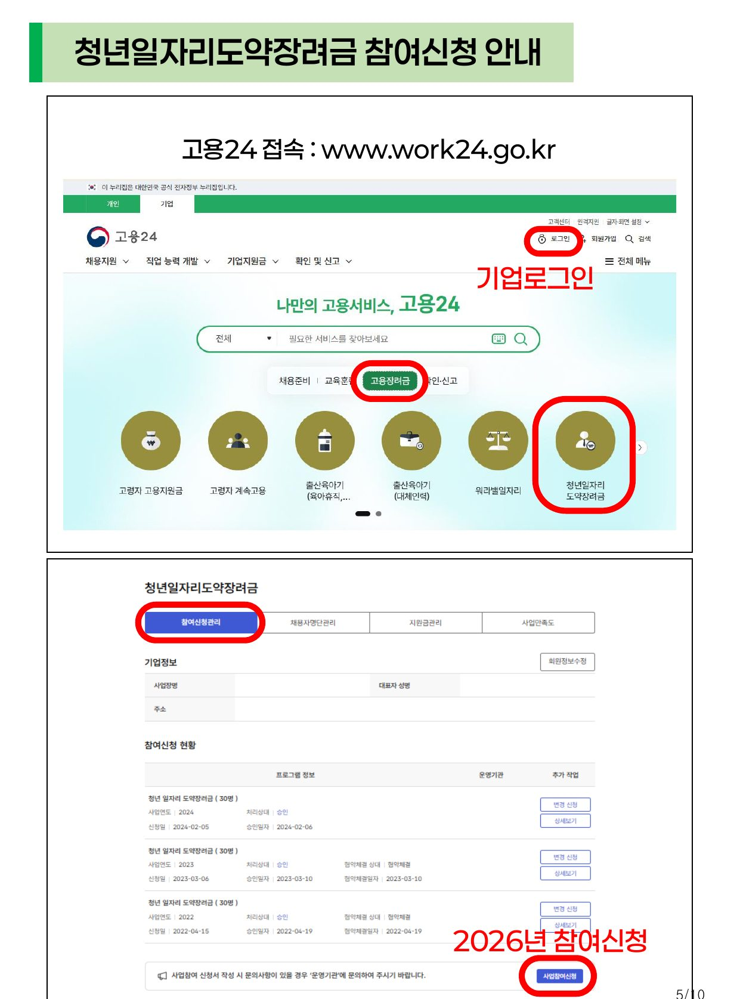
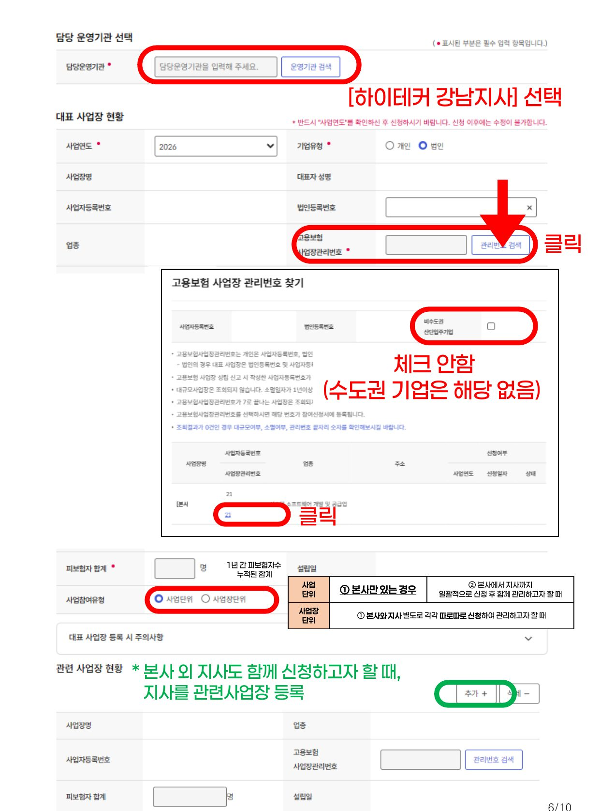
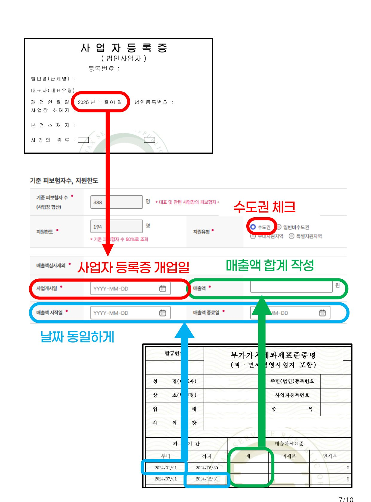
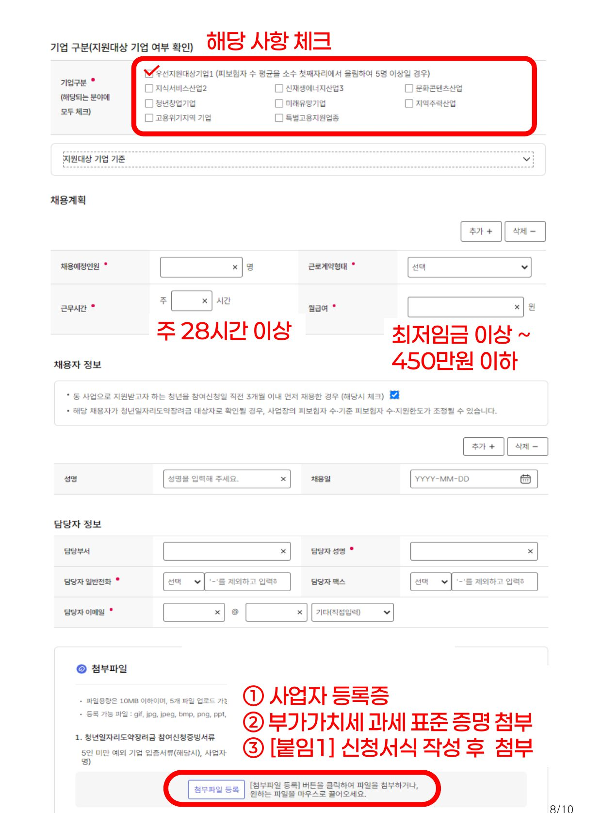

고용노동부 지정 위탁운영기관 · (주)하이테커 강남지사
서류 준비부터 고용24 신청서 작성까지, 순서대로 따라오시면 됩니다.
신청서 작성 마지막 단계에서 아래 3가지를 첨부합니다. 미리 준비해 두시면 한 번에 끝낼 수 있습니다.
반드시 ‘기업’ 탭에서 기업회원으로 로그인해 주세요.

청년일자리도약장려금 > 참여신청관리 > 사업참여신청 화면" loading="lazy" width="1241" height="1675">신청서는 한 페이지로 이어져 있습니다. 아래 순서대로 입력해 주세요.



고용24 기업회원 로그인 후 신청 가능합니다